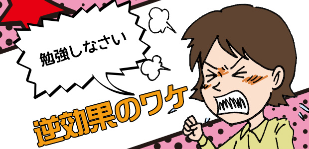

誰でも身に覚えのある、親から言われる「勉強しなさい」の言葉。
日本人で子ども時代、親からこの言葉を言われなかった人は恐らく一人もいないのではないか。
それくらい「勉強しなさい」はポピュラーな日本語ではないでしょうか。
そこで皆さんに質問。
親からこの言葉を聞いてやる気になった人はいるでしょうか？………
…いませんね（笑）。
「せっかく今やるところだったのに、もうやる気なくした！」などと捨てゼリフを吐いてフテくされたことでしょう（笑）。
ではもう一つ質問。
皆さんは我が子に「勉強しなさい」と言ってますか？
NOと言った方はウソをついています（笑）。
確かに最近の親は昔の親ほどダイレクトな命令口調で言わないかも知れない。
その代わり「そんな調子で大丈夫なの～？」「志望校下げたら～」などやんわりジンわり作戦（笑）で追いつめるようです。
結局ことば使いは変わっても、我が子に勉強させようという本音の部分で変わってませんね。
先日の池村先生のブログ（⇒質問にお答えします～親が教えようとするのですが…～）にある通りです。
つまりいつの時代でも親は子どもに勉強して欲しいと思っているので、勉強するように促すが子どもはかえって勉強したがらない。
これのくり返しなわけです…。
多くの親もこの辺の事情―親がうるさく勉強勉強と言うほどヤル気を失くすこと―は分かっていると思います。（分っていないとしたら少しヤバいです。）
今回はこのメカニズムについて一度きちんと整理してみようと思います。
親が勉強しなさいと言うと逆効果のメカニズム
（１）いつの時代でも子どもにとって勉強は嫌なもの、キライなものである。学校でも勉強させられる上に親にも家で強制されるので益々イヤになる。（悪循環のメカニズム）
（２）子どもなりに自分たちの仕事は勉強することだとは一応納得している。だから家でも勉強しなければと思っている。
そう思っているのに親から勉強と言われることで逆ギレ（笑）的に反発する。 (強制→抵抗のメカニズム)
（３） 子どもは勉強しなければとは思っている。しかしそれを強制する（かに見える）親の心の中に、世間体とか見栄だとか親自身のプライドだとか、要するに純粋に 子どもの成長を願う以外の不純物（！）のようなものが見え隠れし、そのことを子どもは敏感に嗅ぎつけ、結果として勉強意欲がそがれる。（偽善嫌悪のメカニズム）
（１）（２）に関しては親自身も体験上理解できるものと思います。悪循環ですね。問題なのは（３）の偽善嫌悪のメカニズムです。
多分親は「子どものため」と思って勉強しなさいと言うのでしょうが、そこに落とし穴があるのです。
「子どものため」とは何でしょう？
勉強をがんばる→成績が上がる→良い学校に入る→良い就職口が見つかる→幸せな人生でしょうか？
それなら単純に幸せな人生を望めば良いのではないでしょうか。その他は全て条件づけに過ぎません。
勉強ができることや良い学校に入ることが幸せに直結するものなら、勉強しなさいはその幸せに至る入口として重要な条件になるでしょう。
しかしそうではないことは今どき誰でも分っていることです。高度成長以降そんな時代はとっくに過ぎ去っているからです。
今の時代本当の幸せとか何か。良い成績さえ取れば、良い学校に入りさえすれば、良い就職口が見つかりさえすればというのはあまりに表面的な条件に過ぎません。
外面的な価値観、すなわち成績が良かったり有名校出身だったり大手の会社に入ったりという、いわば外聞の良し悪しで人生の価値をはかっている限りほんとうの幸せは訪れない。
なぜなら人生の質を決定するものはこれら外的価値ではなく内面の充実の如何にかかっているからです。
特にこれからの時代は、自分が自分らしく生きていくこと。そのために自分の才能を正しく知りできる限りその部分を伸ばし、それが活かされる場を自分で見つけ切り開いていく旺盛な自立心と探究心の方が必要だと思っています。
いま社会はその方向へナダレを打って変化しているように見えます。
親が深く考えず、ただ子どもたちに「勉強しなさい」と言うとき親の心は古い時代の価値観―それは学歴が人間を幸せにする―に支配されている場合が多い。
今を生きる子どもたちにとってそれは親が単に見栄や外聞を気にしている、現状とズレているというメッセージを発しているに等しい。
「勉強しなさい」は益々逆効果となっていくでしょう。
「いや、そうは言っても現実問題として学歴は大事じゃ…」
というあなた。
あなたのそういう価値観こそを疑ってみてはどうかと言ってるのです！
その価値観のままで「勉強しなさい」と言ってる限り子どもは真剣に勉強しないでしょう。
本当の意味で勉強の大切さをあなた自らが身に染みて分かっているなら、子どもは何も言わなくてもいずれ勉強するでしょう。
だから親である皆さんは、一度自分が「なぜ子どもに勉強させたいのか」「子どもが勉強すると安心なのか」ゆっくりと心の中を探ってみましょう。
「子どもの将来が心配だから」という思いはいったん脇に置いて、自分の心の中をこそ点検してみてください。
そこに多くの観念、常識、記憶、感情が渦巻いているのを発見するでしょう。
その上で、それらの「思い」の数々は本当に必要なのか子どもの幸せに直結しているのか考えてみましょう。
ほとんどは思い込みに過ぎないのではないか。
自分が不必要に握りしめているだけではないか。
かえって子どもの「今」を見過ごしているのではないか。
そのような心の変化が起こるかも知れません。
そういう親の変化こそがやがて子どもに良き変化をもたらすのです。